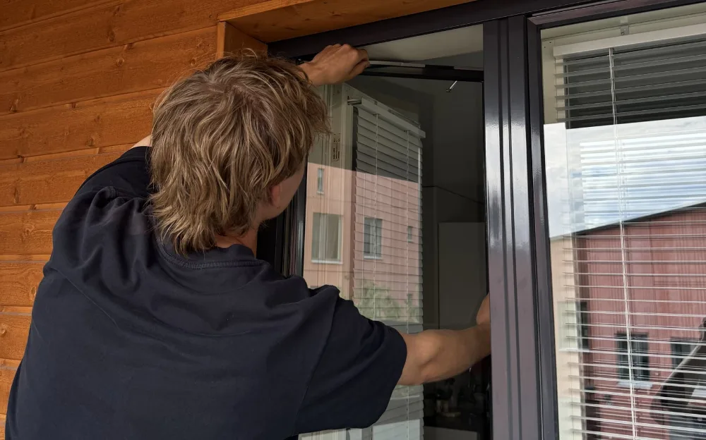
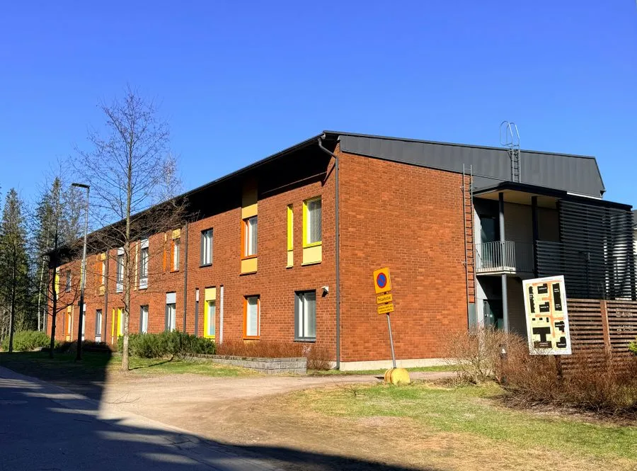

Palvelut
Kiinteä hinta ovelle ja ikkunalle
Tiivisteet, kynnykset ja säädöt samalla käynnillä.

95 €/ikkuna · minimi 149 €Ikkunoiden tiivistys
Vetävät ja natisevat ikkunat kuntoon. Karmi- ja puitetiivisteet uusiksi.
Laske hinta 119 €/ovi · minimi 149 €
119 €/ovi · minimi 149 €

Tarjouksesta